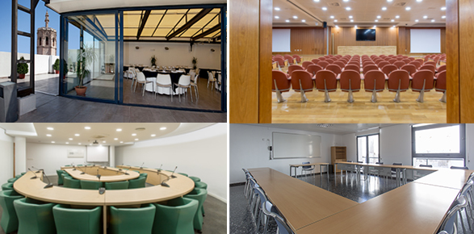

Organizations increasingly rely on large, diverse user communities for feedback and problem detection, but traditional requirements engineering often struggles with the vast data from app stores, social media, and online forums. CrowdRE addresses these challenges by enabling rapid responses to user needs, automating data gathering and analysis (including large language models), and helping the industry adopt and scale these methods. Now in its ninth edition, CrowdRE continues its mission of future-proofing RE for large-scale contexts, placing special emphasis on digital sustainability—exploring how CrowdRE can foster continuous improvement—and on AI-driven solutions that manage diverse, voluminous user feedback.
The Ninth Workshop on Crowd-Based Requirements Engineering (CrowdRE'25) focuses on CrowdRE as a Key Driver of Digital Sustainability, and on Designing AI as Agents and Pipelines for CrowdRE Tasks.
Find more information under the following links:

Photo:Wikimedia CommonsAll deadlines at 23:59:59 AoE.